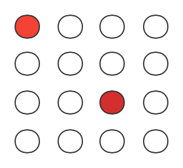
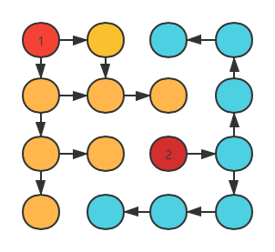
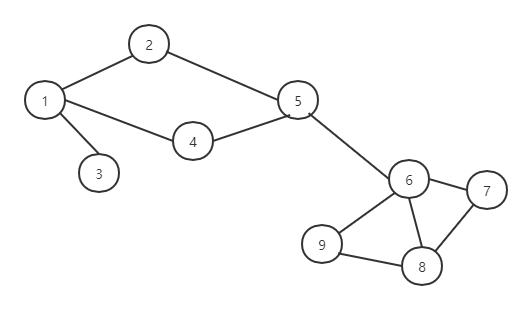
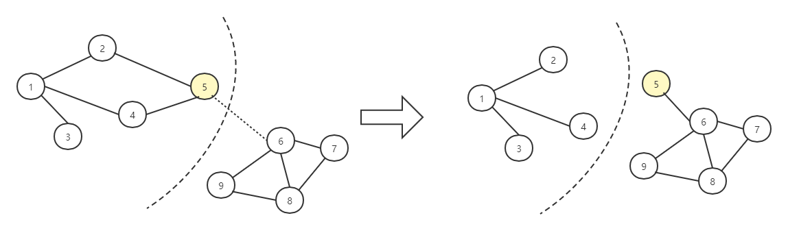
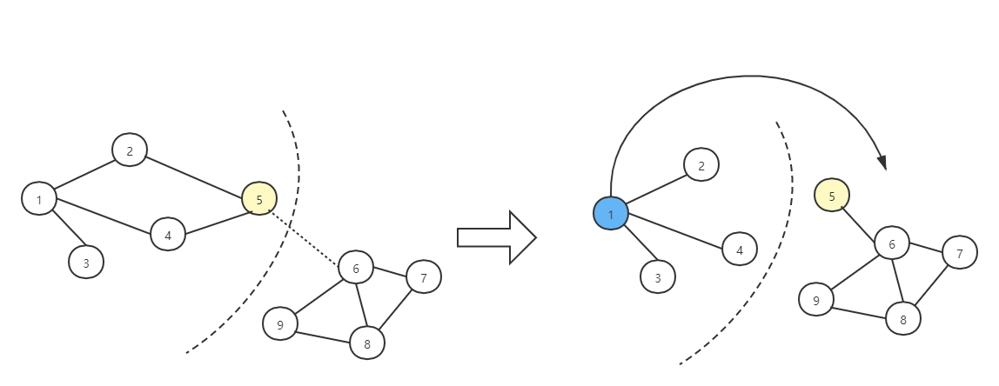

问题是什么？ 这次问题的提出，同样是根据我最近训练的数学建模题而散发出来的。
原问题所依托的背景是：
某交警中队根据其辖区交通实际状况，通常把该辖区划分为若干责任区。
每个责任区都委派一名交警进行交通事故处理，即每名交警仅负责其责任区内的所有交通事故的警情处理。
为均衡每名交警的工作量，交警中队管理部门需要把该辖区划分为若干警情总量尽可能均衡的责任区。
划分辖区的方式大致如下：
值得注意的是，每一个辖区的交通事故易发点之间应该是 可达 的，而每个区域的警情量总和在总体上是大致均等的。
数学抽象 根据问题描述，可以简单将其抽象为一个 顶点赋权无向图 的划分问题。
具体来说，就是对一个顶点权值集合为W W W G < V , E > G<V,E> G < V , E > k k k G 1 < V 1 , E 1 > 、 G 2 、 . . . 、 G k G_1<V_1,E_1>、G_2、...、G_k G 1 < V 1 , E 1 > 、 G 2 、 ... 、 G k
其中有V 1 ∪ V 2 ∪ . . . ∪ V k = V V_1\cup V_2\cup ...\cup V_k=V V 1 ∪ V 2 ∪ ... ∪ V k = V V i ∩ V j = ∅ V_i \cap V_j=\emptyset V i ∩ V j = ∅ i ≠ j a n d i , j = 1 , 2 , . . . , k i\neq j\;\;and\;\; i,j=1,2,...,k i = j an d i , j = 1 , 2 , ... , k
定义G i G_i G i p ( G i ) p(G_i) p ( G i ) ∀ G i , p ( G i ) = 1 \forall G_i,p(G_i)=1 ∀ G i , p ( G i ) = 1
于是得到规划模型：
min ∑ i = 1 k ∣ ∑ j = 1 ∣ V j ∣ w i j − 1 n ∑ j = 1 n w j ∣ s . t . { V 1 ∪ V 2 ∪ . . . ∪ V k = V V i ∩ V j = ∅ p ( G i ) = 1 i ≠ j a n d i , j = 1 , 2 , . . . , k \min{\sum_{i=1}^k|\sum_{j=1}^{|V_j|}w_{ij}-\frac{1}{n}\sum_{j=1}^nw_{j}|} \\s.t.\begin{cases} V_1\cup V_2\cup ...\cup V_k=V\\ V_i \cap V_j=\emptyset\\ p(G_i)=1\\ i\neq j\;\;and\;\; i,j=1,2,...,k \end{cases} min i = 1 ∑ k ∣ j = 1 ∑ ∣ V j ∣ w ij − n 1 j = 1 ∑ n w j ∣ s . t . ⎩ ⎨ ⎧ V 1 ∪ V 2 ∪ ... ∪ V k = V V i ∩ V j = ∅ p ( G i ) = 1 i = j an d i , j = 1 , 2 , ... , k
图划分问题Ⅰ 根据以上解析，可以发现这题的难点集中在图划分上。所以如何合理的进行图划分就是一个值得思考的问题了。
随机划分 本问题我一开始的想法就是利用随机优化算法，例如模拟退火算法来处理，于是我最先想到的方法自然就是随机划分。
例如，邻接矩阵随机取点法 。
对于任意一个图G < V , E > G<V,E> G < V , E >
A = [ c c b b c c c b b c b b a a b b b a a b c c b b a ] A=\left[ \begin{matrix} &c&c&b&b&c&\\ &c&c&b&b&c&\\ &b&b&a&a&b&\\ &b&b&a&a&b&\\ &c&c&b&b&a\\ \end{matrix} \right] A = c c b b c c c b b c b b a a b b b a a b c c b b a
为将其分为两个子图G 1 、 G 2 G_1、G_2 G 1 、 G 2 A A A
例如上式中，将第3、4行以及对应的3、4列整体移出，可得到：
A 1 = [ a a a a ] , A 2 = [ c c c c c c c c c ] A_1=\left[ \begin{matrix} &a&a&\\ &a&a&\\ \end{matrix} \right], A_2=\left[ \begin{matrix} &c&c&c&\\ &c&c&c&\\ &c&c&c&\\ \end{matrix} \right] A 1 = [ a a a a ] , A 2 = c c c c c c c c c
于是，可以通过分别对这两个新的邻接矩阵计算可达矩阵或连通分支数，只要判断连通即可。
注：无向图的邻接矩阵应该是对称矩阵，此处的a,b,c并非具体数值，而是位置标记 。
又或者，随机去边法 。
1）简化读取量。不通过邻接矩阵，直接读取无向图的连通情况表，即一个1 × 2 1\times2 1 × 2
2）随机割边。对连通矩阵随机删除一个点对点的连通对。
3）计算割边后得到的新图的连通分支数，如果是k则退出，并导出此时的k个点集，否则回到第一步。
然而，这样的算法随机性太大，事实上当数据量很大时，二者很难收敛到最优解，况且每一边随机生成都要判断一次连通性。总体来说，如果没有好的生成解的方式和更新解的方式，那所谓 模拟退火 、遗传算法 就和 蒙特卡洛 完全没有区别了，只是迭代次数的问题。
综上所述，我需要找到一个尽可能好的划分策略，以及更新解的方式。
顶点蔓延划分 接下来，将阐述我的“自创划分”的算法，来实现原始解的生成。
首先，由于问题要求的是划分的子图顶点和较为均衡，因此可以考虑在生成解的时候，就尽量利用 贪心 的思考方式，产生一个较为合理的近似解。
于是，考虑如下算法进行解的生成：
找到所给图的顶点中，权值最大 的k k k
此处以二分为例给出算法图示，图中红色点为最大的两个点

以这k k k 基准 ，以是否连通 为条件，分别自主地向周围的点蔓延，直到所有的点都被覆盖

事实上，想要实现这样的算法，也不难，下面以matlab为例给出一种实现方法，利用了多组并行BFS（宽度优先搜索）的思想。
1 2 3 4 5 6 7 8 9 10 11 12 13 14 15 16 17 18 19 20 21 22 23 24 25 26 27 28 29 30 31 32 33 34 35 36 37 38 39 40 41 42 43 44 function [Vn] = graphcut (W,chaos,k,num) V = zeros (1 ,num); quzu = cell(1 ,k); tmp = 0 ; [Wn,max_idx] = sort (W,'descend' ); while find (V==0 ) for i =1 :k V(max_idx(i )) = i ; cur = chaos{max_idx(i )}; quzu{i }{1 } = cur; end while tmp ~= k tmp = 0 ; for i = 1 :k if ~isempty (quzu{i }) cur = quzu{i }{1 }; len = length (cur); for j = 1 :len if V(cur(j )) == 0 V(cur(j )) = i ; quzu{i }{end +1 } = chaos{cur(j )}; end end quzu{i }(1 ) = []; else tmp = tmp + 1 ; end end end end Vn = cell(1 ,k); for i = 1 :k Vn{i } = find (V==i ); end end
注：上述函数中的chaos参数，为一种 并查集 思想的数据结构。
大致思路为：以索引/下标作为顶点编号，该索引下的内容为与这个顶点直接相连的点的集合。
举例如下：

于是有：
a [ 1 ] = { 2 , 3 , 4 } a[1]=\{2,3,4\} a [ 1 ] = { 2 , 3 , 4 }
a [ 2 ] = { 1 , 5 } a[2]=\{1,5\} a [ 2 ] = { 1 , 5 }
a [ 3 ] = { 1 } a[3]=\{1\} a [ 3 ] = { 1 }
……
解的更新 判断连通性 得益于上述数据结构的“便利性”，我们可以对一组解是否连通进行BFS判断，算法如下：
将子集V V V i i i 对i i i c h a o s [ i ] chaos[i] c ha os [ i ] 以队列顶部的顶点作为i i i 判断子集中的顶点是否都被标记，如果是则说明V V V G G G 点交换 根据上述原始解的生成，我们可以巧妙的设置新解的产生，即对原解中的划分边缘点进行交换。

问题有三，一是如何判断什么是 边缘点 ；二是如何判断是否可以交换；三是交换后能否保证新子图是连通图。
关于问题一。可以利用前面提到的c h a o s [ i ] chaos[i] c ha os [ i ]
以上图中的左图为例，有V 左 = 1 ， 2 ， 3 ， 4 ， 5 V_{左}={1，2，3，4，5} V 左 = 1 ， 2 ， 3 ， 4 ， 5 c h a o s [ 5 ] = { 2 , 4 , 6 } chaos[5]=\{2,4,6\} c ha os [ 5 ] = { 2 , 4 , 6 } 6 ∉ V 左 6\notin V_{左} 6 ∈ / V 左
那会不会存在 所有的点内直达点都在集合内 的情况呢？答案是，有的。这种情况只会出现在另一个集合为空集的时候。然而由于我们前面产生的原始解不会有这种情况出现，所以无需担心。
关于问题二。如果自身所在的子集只有一个元素，就肯定不能将自己交换出去。因为当自己被其他子集划过去后，当前子集就变为了空集，既不符合题意，也会让上一个问题得不到解决。
关于问题三。第一，因为我们是通过找寻边缘点进行交换的，所以当把当前锁定的边缘点划分过去目标子集时，目标子集会在原本自身就连通的情况下，再加一个连通的顶点，即是目标子集绝对不会不连通。因此，仅需对边缘点当前所在的子集进行假设判断。判断如果边缘点离开当前集合后得到的新集合是否仍然连通，这是必要的。

如上图所示，如今将图中的顶点(1)进行割舍，就会导致点2、3、4全部变为孤立点。
代码 于是，可以得到完美解决该问题的代码：
1 2 3 4 5 6 7 8 9 10 11 12 13 14 15 16 17 18 19 20 21 22 23 24 25 26 27 28 29 30 31 32 33 34 35 36 37 38 39 40 41 42 43 44 45 46 47 48 49 50 51 52 53 54 55 56 57 58 59 60 61 function [Vn] = rewrite (chaos,V,k,num) while 1 Vn = V; n = unidrnd(k); len = length (Vn{n}); if len == 1 break ; end m = unidrnd(length (Vn{n})); tmp = Vn{n}(m); flag = 0 ; for point = chaos{tmp} if ~ismember (point,Vn{n}) flag = 1 ; break ; end end if ~flag continue ; end Vn{n}(m) = []; qu = Vn{n}(1 ); visit = zeros (1 ,num); visit(qu(1 )) = 1 ; while ~isempty (qu) cur = qu(1 ); for i = chaos{cur} if visit(i ) ~= 1 && ismember (i ,Vn{n}) visit(i ) = 1 ; if ~ismember (i ,qu) qu(end +1 ) = i ; end end end qu(1 ) = []; end if find (visit(Vn{n})==0 ) Vn = V; break ; end for j = 1 :k if ismember (point,Vn{j }) Vn{j }(end +1 ) = tmp; flag = 0 ; break ; end end if ~flag break ; end end end
图划分问题Ⅱ 本问题事实上属于NP难题，因此才考虑利用随机优化算法进行处理。而且问题本身属于比较少见的顶点赋权无向图，而不是边加权的无向图，因此参考文献有限。
下面我简要给出目前已有的图划分问题的算法，供参考。
待更
谱聚类 KL算法 参考资料